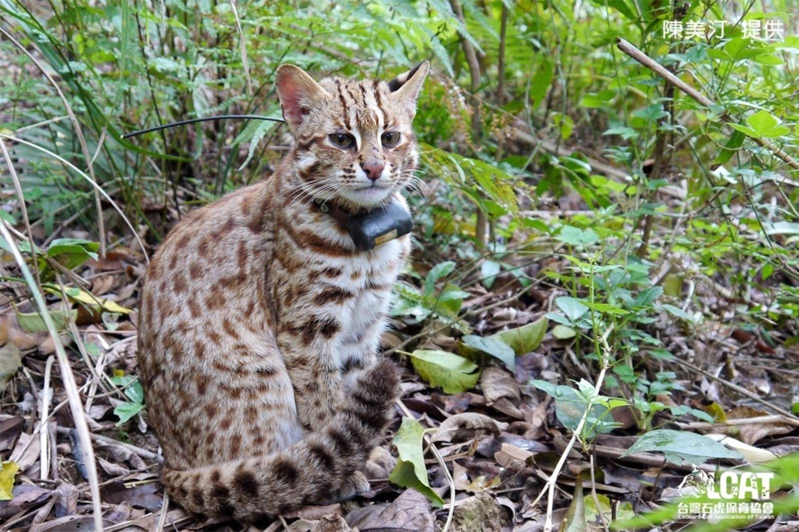

Ecology and Conservation of Leopard Cat in Taiwan

A Leopard Cat by channelplus
There are many endemic species in Taiwan. These endemic species are gifts from nature and need to be cherished and cared for.
Why is the Taiwan Leopard Cat on the verge of extinction? What are the reasons? Why is it impossible for them to survive in Taiwan?
Many of the dangers encountered by Leopard Cats are caused by human beings...what can we do to help them?